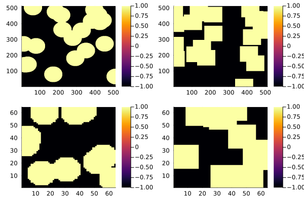

Bachelor Thesis
Table of Contents
1. Utility functions
2. Cahn Hillard Equation Overview
Partial Differential Equation (PDE) solving the state of a 2 Phase Fluid(Wu 2022). The form of the Cahn Hillard Equation used for the remainder of this thesis is: where \( \phi\) is the so-called phase field. Demarking the different states of the fluids through an Interval \(I=[-1,1] \) and where \(\partial I = \{-1,1\} \) represents full state of one fluid. \(\varepsilon > 0 \) is a positive constant
\begin{align} \label{orgd1302b6} \phi _t(x,t) &= \Delta \mu \\ \mu &= - \varepsilon^2 \Delta \phi + W'(\phi) \end{align}, and \(\mu\) is the chemical potential(Wu 2022). While the Cahn Hillard exist in a more general form taking the fluid’s mobility \(M(\Phi) \) into account, we will assume \(M(\Phi) = 1 \), simplifying the CH-Equations used in (Wu 2022) (Shin, Jeong, and Kim 2011) to what is stated above.
The Advantages of the Cahn Hillard Approach as compared to traditional fluid dynamics solvers are for example: “explicit tracking of the interface” (Wu 2022), as well as “evolution of complex geometries and topological changes […] in a natural way” (Wu 2022) In practice it enables linear interpolation between different formulas on different phases
2.1. TODO Derivation from paper
2.1.1. Free energy
The Cahn Hillard Equations can be motivated Using a Ginzburg Landau type free energy equation:
\begin{align*} E^{\text{bulk}} = \int_{\Omega} \frac{\varepsilon^2}{2} |\nabla \phi |^2 + W(\phi) \, dx \end{align*}where \(W(\phi) \) denotes the (Helmholtz) free energy density of mixing.“” (Wu 2022) and will be approximated in further calculations as \(W(\phi) = \frac{(1-\phi ^2)^2}{4}\) as used in(Shin, Jeong, and Kim 2011)
The chemical potential then follows as derivative of Energy in respect to time.
\begin{align*} \mu &= \frac{\delta E_{bulk}(\phi)}{\delta \phi} = -\varepsilon^2 \Delta \phi + W'(\phi) \end{align*}2.1.2. Derivation by mass balance
The Cahn Hillard equation then can be motivated as follows: consider
\begin{equation} \label{orgab5ef77} \partial_t \phi + \nabla J = 0 \end{equation}where J is mass flux. \eqref{orgab5ef77} then states that the change in mass balances the change of the phasefield. Using the no-flux boundry conditions:
\begin{align} J \cdot n &= 0 & \partial\Omega &\times (0,T)\\ \partial_n\phi &= 0 & \partial\Omega &\times (0,T) \end{align}conservation of mass follows see(Wu 2022).
Using:
\begin{align} J &= - \nabla \mu \end{align}which conceptionally sets mass flux to equalize the potential energy gradient, leads to the formulation of the CH equations as stated above. Additionally, the boundary conditions evaluate to:
\begin{align*} - \nabla \mu &= 0 \\ \partial_n \phi = 0 \end{align*}ie no flow leaves and potential on the border doesn’t change. Then for \(\phi \) then follows:
\begin{align*} \frac{d}{dt}E^{bulk}(\phi(t)) &= \int_{\Omega} ( \varepsilon^2 \nabla \phi \cdot \nabla \partial_t \phi + W'(\phi) \partial_t \phi) \ d x \\ &= - \int_{ \Omega } |\nabla \mu|^2 \ d x, & \forall t \in (0,T) \end{align*}hence the Free Energy is decreasing in time.
3. Baseline Multigrid solver:
As baseline for further experiments a multi grid method based on finite differences by(Shin, Jeong, and Kim 2011). Is used.
3.1. Discretization:
it discretizes the phasefield and potential energy \( \phi, \mu \) into a grid wise functions \(\phi_{ij}, \mu_{ij} \) and defines the partial derivatives \( D_xf_{ij}, \ D_yf_{ij} \) using the differential quotients:
\begin{align} D_xf_{i+\frac{1}{2} j} &= \frac{f_{i+1j} - f_{ij}}{h} & D_yf_{ij+\frac{1}{2}} &= \frac{f_{ij+1} - f_{ij}}{h} \end{align}for \( \nabla f, \Delta f \) then follows:
\begin{align*} \label{org2349256} \nabla_d f_{ij} &= (D_x f_{i+1j} , \ D_y f_{ij+1}) \\ \Delta_d f_{ij} &= \frac{D_x f_{i+\frac{1}{2}j} - D_x f_{i-\frac{1}{2}j} + D_y f_{ij+\frac{1}{2}} - D_y f_{ij-\frac{1}{2}}}{h} = \nabla_d \cdot \nabla_d f_{ij} \end{align*}the authors further adapt the discretized phasefield by the characteristic function of the domain \( \Omega\):
\begin{align*} G(x,y) &= \begin{cases} 1 & (x,y) \in \Omega \\ 0 & (x,y) \not\in \Omega \end{cases} \end{align*}To simplify notation the following abbreviations are used:
Math: \( \Sigma_G f_{ij} = G_{i+\frac{1}{2}j} f^{n + \frac{1}{2},m}_{i+1j} + G_{i-\frac{1}{2}j} f^{n + \frac{1}{2},m}_{i-1j} + G_{ij+\frac{1}{2}} f^{n + \frac{1}{2},m}_{ij+1} + G_{ij-\frac{1}{2}} f^{n + \frac{1}{2},m}_{ij-1} \) Code: discrete_weigted_neigbour_sum(i,j,...) and Math: \( \Sigma_G = G_{i+\frac{1}{2}j} + G_{i-\frac{1}{2}j} + G_{ij+\frac{1}{2}} + G_{ij-\frac{1}{2}} \) Code: neighbours_in_domain(i,j,G) the expansion of \( \nabla_{d} \cdot G_{ij} \nabla_{d} f_{ij}= \Sigma_{G}f_{ij} - \Sigma_{G} \cdot f_{ij} \) .
To account for boundry conditions and arbitrary shaped domains.
The authors (Shin, Jeong, and Kim 2011) then define the discrete CH Equation adapted for Domain, as:
3.2. Test Data:
For testing and later training, a multitude o different phasefields where used. Notably an assortment of randomly placed circles, squares, and arbitrary generated values
struct multi_solver phase::Matrix{Float64} potential::Matrix{Float64} xi::Matrix{Float64} psi::Matrix{Float64} epsilon::Float64 h::Float64 dt::Float64 W_prime::Function len::UInt32 width::UInt32 end
| Size | blobs | blobsize | norm |
|---|---|---|---|
| 64 | 10 | 10 | 2 |
| 64 | 10 | 10 | 100 |
| 512 | 20 | 50 | 2 |
function testdata(gridsize , blobs , radius ,norm) rngpoints = rand(1:gridsize, 2, blobs) M = zeros(gridsize,gridsize) .- 1 for p in axes(rngpoints , 2) point = rngpoints[:, p] for I in CartesianIndices(M) if (LinearAlgebra.norm(point .- I.I , norm) < radius) M[I] = 1 end end end M end

Figure 1: Examples of different phasefields used as initial condition later on
3.3. adaptations to the simplified problem
even tough this work uses rectangular domains, the adaptation of the algorithm is simplified by the domain indicator function, as well as 0 padding, in order to correctly include the boundary conditions of the CH equation. Therefore, the internal representation of the adapted algorithm considers phasefield and potential field \( \phi , \mu \) as 2D arrays of shape \( (N_x + 2 , N_y + 2) \) in order to accommodate padding. Where Nx and Ny are the number of steps in x-/y-Direction respectively. Hence, we define the discrete domain function as:
\begin{align*} G_{ij} &= \begin{cases} 1 & (i,j) \in [1,N_x+1] \times [1,N_y+1] \\ 0 & \text{else} \end{cases} \end{align*}3.4. PDE as Operator
and derive the iteration operator \( L(\phi^{n+1} , \mu^{n+\frac{1}{2}}) = (\zeta^n ,\psi^n) \)
\begin{align*} L \begin{pmatrix} \phi^{n+1} \\ \mu^{n+\frac{1}{2}} \end{pmatrix} &= \begin{pmatrix} \frac{\phi^{n+1}}{\Delta t} - \nabla _d \cdot ( G_{ij} \nabla _d \mu^{n+\frac{1}{2}} ) \\ \varepsilon^2 \nabla _d \cdot (G_{ij} \nabla_d \phi_{ij}^{n+1}) - 2\phi_{ij}^{n+1} + \mu_{ij}^{n+\frac{1}{2}} \end{pmatrix} \end{align*}implented as
using LinearAlgebra function L(solver::multi_solver, i, j) xi = solver.phase[i, j] / solver.dt - (discrete_G_weigted_neigbour_sum(i, j, solver.potential, G, solver.len, solver.width) - neighbours_in_domain(i, j, solver.len, solver.width) * solver.potential[i, j]) / solver.h^2 psi = solver.epsilon^2 * (discrete_G_weigted_neigbour_sum(i, j, solver.phase, G, solver.len, solver.width) / solver.h^2 - neighbours_in_domain(i, j, solver.len, solver.width) * solver.phase[i, j]) - 2 * solver.phase[i, j] + solver.potential[i, j] return (xi, psi) end
Furthermore, as it enabled a Newton iteration we state its derivative in respect to the current gridpoint \( (i,j)^{T} \) in as:
\begin{align*} DL\begin{pmatrix} \phi \\ \mu \end{pmatrix} &= \begin{pmatrix} \frac{1}{\Delta t} & \Sigma_{G} \\ \Sigma_{G} - 2 & 1 \end{pmatrix} \end{align*}implemented:
function dL(solver::multi_solver , i , j) return [ 1/solver.dt neighbours_in_domain(i,j,G); (neighbours_in_domain(i,j,G) - 2) 1] end
initialized as \[ (\zeta^n, \psi^n) = \left(\begin{smallmatrix} \frac{\phi_{ij}^{n+1}}{\Delta t}\\ W'(\phi_{ij}^n) - 2\phi_{ij}^n \end{smallmatrix} \right) \]
function set_xi_and_psi!(solver::multi_solver) xi_init(x) = x / solver.dt psi_init(x) = solver.W_prime(x) - 2 * x solver.xi[2:end-1, 2:end-1] = xi_init.(solver.phase[2:end-1,2:end-1]) solver.psi[2:end-1, 2:end-1] = psi_init.(solver.phase[2:end-1,2:end-1]) return nothing end
the algorithm is then defined as:
Wherein SMOOTH consists of point-wise Gauß Seidel Relaxation, by solving L for \( \overline{\phi} ,\overline{\mu} \) with the initial guess for \( \zeta^n , \psi^n \).
3.5. SMOOTH Operator
and is implemented as:
include("elypssolver.jl") function SMOOTH!( solver::multi_solver, iterations, adaptive ) for k = 1:iterations old_phase = copy(solver.phase) for i = 2:(solver.len + 1) for j = 2:(solver.width + 1) bordernumber = neighbours_in_domain(i, j, solver.len, solver.width) coefmatrix = [ (1 / solver.dt) (bordernumber / solver.h^2) ; (-1 * (2 + (solver.epsilon^2 / solver.h^2) * bordernumber)) 1 ] b = [ ( solver.xi[i, j] + discrete_G_weigted_neigbour_sum( i, j, solver.potential, G, solver.len, solver.width ) / solver.h^2 ), ( solver.psi[i, j] - (solver.epsilon^2 / solver.h^2) * discrete_G_weigted_neigbour_sum( i, j, solver.phase, G, solver.len, solver.width ) ) ] res = coefmatrix \ b solver.phase[i, j] = res[1] solver.potential[i, j] = res[2] end end if adaptive && LinearAlgebra.norm(old_phase - solver.phase) < 1e-8 print("SMOOTH terminated at $(k) succesfully") break end end end

3.6. v-cycle
The v-cycle of a two grid method using pre and post smothing is then stated by
function v_cycle(grid::Array{multi_solver}, level) SMOOTH!(solver , 400, true) solver = grid[level] # extract (d,r) as array operations dr = zeros((solver.len+ 2, solver.width+ 2, 2)) # TODO check array indicies dr[2:end-1, 2:end-1, :] = [ [ [solver.xi[i,j] , solver.psi[i,j]] .- L(solver ,i,j) for j in 2:(solver.width+ 1) ] for i in 2:(solver.len+ 1) ] ) d = dr[:, :, 0] r = dr[:, :, 1] # print(f"Max derivation d: {np.linalg.norm(d)}") # print(f"Max derivation r: {np.linalg.norm(r)}") restrict!(grid[level], grid[level + 1]) solver = grid[level + 1] #TODO short newton iteration for u_large = zeros((solver.len+ 2, solver.width+ 2)) v_large = zeros((solver.len+ 2, solver.width+ 2)) # solve for phi^ mu^ with L for i in 2:(self.len+1) for j in 2:(self.width+1) # print(f"Max derivation u: {np.linalg.norm(u_large)}") # print(f"Max derivation v: {np.linalg.norm(v_large)}") end end # smooth again: SMOOTH(800) end
Sol let us have a look at how the internals look in the first iteration

4. Relaxed Problem
In effort to decrease the order of complexity, the following relaxation to the classical Cahn Hillard Equation is proposed:
\begin{align*} \partial_t \phi^\alpha &= \Delta \mu \\ \mu &= \varepsilon ^2(c^\alpha - \phi^\alpha) + W'(\phi) \end{align*}that in turn requires solving an additional PDE each time-step to calculate \(c\). \( c \) is the solution of the following elliptical PDE
\begin{align*} - \Delta c^\alpha + \alpha c^a &= \alpha \phi ^\alpha \end{align*}4.1. TODO relaxed operators:
the multi-grid solver proposed earlier is then adapted to the relaxed Problem by replacing the differential operators by their discrete counterparts as defined in \eqref{org2349256} and expanding them
4.1.1. L Relaxed
for the reformulation of the iteration in terms of Operator \(L\) then follows:
\begin{align*} L \begin{pmatrix} (\phi ^{n+1})^\alpha \\ \mu^{n+1} \end{pmatrix} &= \begin{pmatrix} \frac{(\phi^{n+1,m}_{ij})^\alpha}{\Delta t} - \nabla _d \cdot (G_{ji} \nabla _d \mu^{n + \frac{1}{2},m}_{ji}) \\ \varepsilon ^2 \alpha (c^\alpha - (\phi^{n+1,m}_{ij})^\alpha) - 2(\phi ^{n+1,m}_{ij})^\alpha -\mu^{n + \frac{1}{2},m}_{ji} \end{pmatrix} \end{align*}4.1.2. SMOOTH
and correspondingly the SMOOTH operation expands to:
\begin{align*} SMOOTH( (\phi^{n+1,m}_{ij})^\alpha, \mu^{n + \frac{1}{2},m}_{ji}, L_h , \zeta ^n , \psi ^n ) \end{align*} \begin{align*} \label{org7b9344f} \frac{1}{h^2}\left(G_{i+\frac{1}{2}j} + G_{i-\frac{1}{2}j} + G_{ij+\frac{1}{2}} + G_{ij-\frac{1}{2}}\right)\overline{\mu}^{n + \frac{1}{2},m}_{ji} &= \frac{(\phi ^{n+1,m}_{ij})^\alpha}{\Delta t} - \zeta^n_{ij} \\ &- \frac{1}{h^2} (\\ &G_{i+\frac{1}{2}j} \mu^{n + \frac{1}{2},m}_{i+1j}\\ &+ G_{i-\frac{1}{2}j} \mu^{n + \frac{1}{2},m}_{i-1j} \\ &+ G_{ij+\frac{1}{2}} \mu^{n + \frac{1}{2},m}_{ij+1} \\ &+ G_{ij-\frac{1}{2}} \mu^{n + \frac{1}{2},m}_{ij-1} \\ & ) \\ \end{align*} \begin{align*} \varepsilon ^2 \alpha (\overline{\phi} ^{n+1,m}_{ij})^\alpha + 2 \phi ^{n+1,m}_{ij} &= \varepsilon ^2 \alpha c^\alpha -\mu^{n + \frac{1}{2},m}_{ji} - \psi_{ij} \end{align*}- Proposal1
Since the resulting system no longer is linear, (albeit simpler in Dimension), we propose a newton method to solve second equation (in conjunction with the first one) hopefully solving this converges faster than the original multiple SMOOTH Iterations. The iteration solves for \( (\phi ^{n+1,m}_{ij})^\alpha = x \) as free variable. Therefore, it follows for \( F(x) \)
\begin{align*} F(x) &= \varepsilon ^2 x^\alpha + 2x - \varepsilon^2 c^\alpha + y + \psi_{ij} \\ y &= \frac{x}{\Delta t} - \zeta^n_{ij} \\ &- \frac{1}{h^2}\left(G_{i+\frac{1}{2}j} \mu^{n + \frac{1}{2},m}_{i+1j} + G_{i-1j} \mu^{n + \frac{1}{2},m}_{i-1j} + G_{ij+1} \mu^{n + \frac{1}{2},m}_{ij+1} + G_{ij-1} \mu^{n + \frac{1}{2},m}_{ij-1}\right) \\ &\cdot \left(G_{i+1j} + G_{i-1j} + G_{ij+1} + G_{ij-1}\right)^{-1} \\ \end{align*}And the derivative for the iteration is
\begin{align*} \frac{d}{dx} F(x)&= \alpha \varepsilon^2 x^{\alpha-1} + 2 + \frac{d}{dx} y \\ \frac{d}{dx} y &= \frac{1}{\Delta t} \end{align*} - Proposal2
solve analytically for \( \overline{\mu_{ij}^{n+1,m}} \) and \( (\overline{\phi_{ij}^{n+1,m}})^{\alpha} \). This was not done in the original paper as the there required System of linear equations was solved numerically. The relaxation simplifies the it to one dimension, and enables analytical solutions:
Let \( \Sigma_G \mu_{ij} = G_{i+\frac{1}{2}j} \mu^{n + \frac{1}{2},m}_{i+1j} + G_{i-\frac{1}{2}j} \mu^{n + \frac{1}{2},m}_{i-1j} + G_{ij+\frac{1}{2}} \mu^{n + \frac{1}{2},m}_{ij+1} + G_{ij-\frac{1}{2}} \mu^{n + \frac{1}{2},m}_{ij-1} \) and \( \Sigma_G = G_{i+\frac{1}{2}j} + G_{i-\frac{1}{2}j} + G_{ij+\frac{1}{2}} + G_{ij-\frac{1}{2}} \). Then \eqref{org7b9344f} solves as
\begin{align*} \varepsilon^2 \alpha(\phi^\alpha) + 2\phi^\alpha &= \varepsilon^2 \alpha c^\alpha - \frac{h^2}{\Sigma_G} (\frac{\phi^\alpha}{\Delta t} - \zeta^n_{ij} - \frac{1}{h^2} \Sigma_G \mu_{ij}) - \psi_{ij} \end{align*}\( \implies \)
\begin{align*} \varepsilon^2\alpha (\phi^\alpha) + 2\phi^\alpha + \frac{h^2}{\Sigma_G}\frac{\phi^\alpha}{\Delta t} &= \varepsilon^2 \alpha c^\alpha - \frac{h^2}{\Sigma_G} (- \zeta^n_{ij} - \frac{1}{h^2} \Sigma_G \mu_{ij}) - \psi_{ij} \end{align*}\( \implies \)
\begin{align*} (\varepsilon^2 \alpha + 2 + \frac{h^2}{\Sigma_G \Delta t}) \phi^\alpha = \varepsilon^2 \alpha c^\alpha - \frac{h^2}{\Sigma_G}(- \zeta^n_{ij} - \frac{\Sigma_G \mu_{ij}}{h^2} ) -\psi_{ij} \end{align*}
4.2. Elliptical PDE:
on order to solve the relaxed CH Equation the following PDE as to be solved in Each additional time step: or in terms of the characteristic function:
\begin{align*} - \nabla \cdot (G \nabla c^\alpha) + \alpha c^\alpha = \alpha \phi ^\alpha \end{align*}Similarly to the first solver this PDE is solved with a finite difference scheme using the same discretisations as before:
4.2.1. Discretization
the Discretization of the PDE expands the differential opperators in the same way and proposes an equivalent scheme for solving.
\begin{align*} - \nabla_d \cdot (G_{ij} \nabla_d c_{ij}^\alpha) + \alpha c_{ij}^\alpha &= \alpha \phi_{ij}^\alpha \end{align*}\( \implies \)
\begin{align*} - (\frac{1}{h}(G_{i+\frac{1}{2}j} \nabla c^\alpha_{i+\frac{1}{2}j} + G_{ij+\frac{1}{2}} \nabla c^\alpha_{ij+\frac{1}{2}}) & \\ - (G_{i-\frac{1}{2}j} \nabla c^\alpha_{i-\frac{1}{2}j} + G_{ij-\frac{1}{2}} \nabla c^\alpha_{ij-\frac{1}{2}})) + \alpha c_{ij}^\alpha &= \alpha \phi_{ij}^\alpha \end{align*}\( \implies \)
\begin{align*} - \frac{1}{h^2} ( G_{i+\frac{1}{2}j}(c_{i+1j}^\alpha - c_{ij}^\alpha) & \\ +G_{ij+\frac{1}{2}}(c_{ij+1}^\alpha - c_{ij}^\alpha) & \\ +G_{i-\frac{1}{2}j}(c_{i-1j}^\alpha - c_{ij}^\alpha)& \\ +G_{ij-\frac{1}{2}}(c_{ij-1}^\alpha - c_{ij}^\alpha)) + \alpha c_{ij}^\alpha &=\alpha \phi_{ij}^\alpha \end{align*}As before we abbreviate \( \Sigma_G c^\alpha_{ij} = G_{i+\frac{1}{2}j} c^\alpha_{i+1j} + G_{i-\frac{1}{2}j} c^\alpha_{i-1j} + G_{ij+\frac{1}{2}} c^\alpha_{ij+1} + G_{ij-\frac{1}{2}} c^\alpha_{ij-1} \) and \( \Sigma_G = G_{i+\frac{1}{2}j} + G_{i-\frac{1}{2}j} + G_{ij+\frac{1}{2}} + G_{ij-\frac{1}{2}} \). Then the discrete elyptical PDE can be stated as:
\begin{align} \label{orgf7c5eba} -\frac{ \Sigma_G c^\alpha_{ij}}{h^2} + \frac{\Sigma_G}{h^2} c^\alpha_{ij} + \alpha c^\alpha_{ij} &= \alpha\phi^\alpha_{ij} \end{align}- Proposal1 Newton Solver
And then we propose a simple newton Iteration to solve \eqref{orgf7c5eba} for \( x = c^\alpha_{ij} \): Let \( F, dF \) be:
\begin{align*} F(x) &= - \frac{\Sigma_Gc^\alpha_{ij}}{h^2} + \frac{\Sigma_G}{h^2} x + \alpha x - \alpha \phi_{ij}^\alpha \end{align*}and \( dF(x) \)
\begin{align*} dF(x) &= - \frac{\Sigma_G}{h^2} + \alpha \end{align*}the implementation then is the following:
from numba import njit from numpy.typing import NDArray import numpy as np from multi_solver import neighbours_in_domain , discrete_G_weigted_neigbour_sum , __G_h @njit def elyptical_PDE_solver( c: NDArray[np.float64], phase: NDArray[np.float64], len: int, width: int, alpha: float, h: float, n: int, ) -> NDArray[np.float64]: """ solves elyptical equation """ maxiter = 10000 tol = 1.48e-4 for k in range(n): for i in range(1, len + 1): for j in range(1, width + 1): bordernumber = neighbours_in_domain(i, j, len, width) x = c[i, j] for iter in range(maxiter): F = ( -1 * h**-2 * discrete_G_weigted_neigbour_sum(i, j, c, __G_h, len, width) + h**-2 * bordernumber * x + alpha * x - alpha * phase[i, j] ) dF = alpha + h**-2 * bordernumber if dF == 0: continue step = F / dF x = x - step if abs(step) < tol: break c[i, j] = x return c
as input we use :
from multi_solver_relaxed import CH_2D_Multigrid_Solver_relaxed , test_solver , plot test_phase = tu.k_spheres_phase(15, 10, size=64) t = test_solver(test_phase) t.elyps_solver = elyptical_PDE_solver t.solve_elyps(100) sns.heatmap(t.c) plt.plot()

- Proposal2 Analytical solver
solving \eqref{orgf7c5eba} for \(c_{ij}^\alpha \) then results in.
\begin{align*} \left( \frac{\Sigma_{G}}{h^2} + \alpha \right)c_{ij}^{\alpha} = \alpha\phi^{\alpha}_{ij} + \frac{\Sigma_G c_{ij}^{\alpha}}{h^2} \end{align*}and can be translated to code as follows
@njit def elyps_solver( c: NDArray[np.float64], phase: NDArray[np.float64], len: int, width: int, alpha: float, h: float, n: int, ) -> NDArray[np.float64]: for k in range(n): for i in range(1, len + 1): for j in range(1, width + 1): bordernumber = neighbours_in_domain(i, j, len, width) c[i, j] = ( -1* alpha * phase[i, j] + discrete_G_weigted_neigbour_sum(i, j, c, __G_h, len, width) / h**2 ) / (bordernumber / h**2 + alpha) return c
and looks like
from multi_solver_relaxed import CH_2D_Multigrid_Solver_relaxed , test_solver , plot test_phase = tu.k_spheres_phase(15, 10, size=64) t = test_solver(test_phase) t.elyps_solver = elyps_solver t.alpha = 1001 t.solve_elyps(100) sns.heatmap(t.c) plt.plot()
from multi_solver_relaxed import CH_2D_Multigrid_Solver_relaxed , test_solver , plot test_phase = tu.k_spheres_phase(15, 10, size=64) t = test_solver(test_phase) t.elyps_solver = elyps_solver t.alpha = 1001 t.solve_elyps(40) prev = np.array(t.c) t.solve_elyps(1) sns.heatmap(t.c - prev) plt.plot()
- Proposal 4
as the solver still exhibits unexpected behaviour, ie. it doesn’t seem to converge wit higher iterations, we propose a relaxation by interpolating the new value of \( c_{ij}^\alpha \) with the old one
@njit def elyps_solver( c: NDArray[np.float64], phase: NDArray[np.float64], len: int, width: int, alpha: float, h: float, n: int, delta = 0.9 ) -> NDArray[np.float64]: for k in range(n): for i in range(1, len + 1): for j in range(1, width + 1): bordernumber = neighbours_in_domain(i, j, len, width) c_new = ( alpha * phase[i, j] + discrete_G_weigted_neigbour_sum(i, j, c, __G_h, len, width) / h**2 ) / (bordernumber / h**2 + alpha) c[i,j] = c[i,j] * delta + (1-delta) * c_new return c
from multi_solver_relaxed import CH_2D_Multigrid_Solver_relaxed , test_solver , plot test_phase = tu.k_spheres_phase(15, 10, size=64) t = test_solver(test_phase) t.elyps_solver = elyps_solver t.alpha = 100000001 t.solve_elyps(1000) sns.heatmap(t.c) plt.plot()